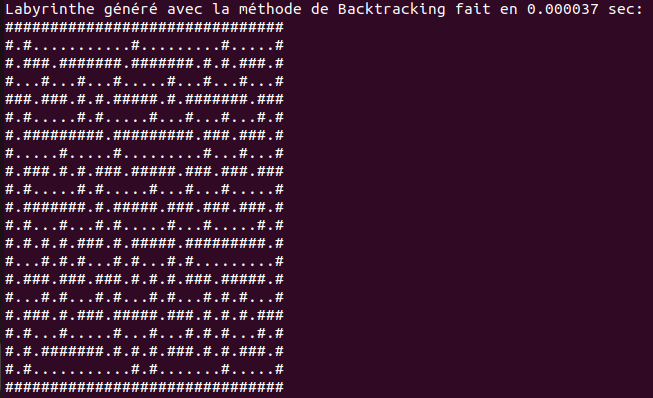
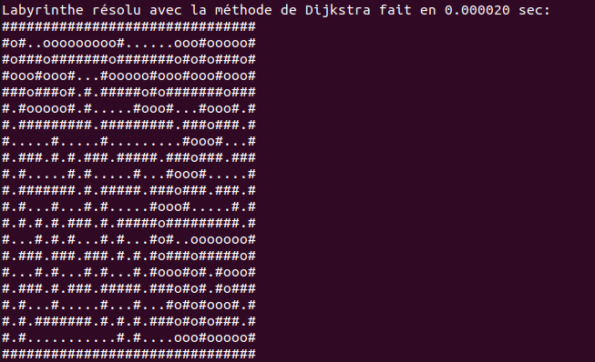

Auteurs
Doubli Hoda & Assia AIT TALEB (GM3)
Date : Novembre 2023
1. Une aventure algorithmique
Ce projet n’était pas un simple devoir technique, mais une immersion dans le monde fascinant des algorithmes. Avec Hoda, nous avons uni nos forces pour concevoir une application capable de générer et résoudre des labyrinthes - un défi qui s’est vite transformé en une belle aventure de logique et de patience.
Le vrai tournant ? Comprendre que tout reposait sur la récursivité. Nous étions souvent tentées de passer directement au code, mais cette fois, c’est sur papier que nous avons pris le temps de visualiser les étapes. Ce moment d’alignement entre nous deux a complètement débloqué la suite. C’était aussi une belle leçon : prendre du recul, discuter, schématiser... avant de coder.
2. Comment ça marche ?
Imaginez une grille vide. Notre programme commence à y « creuser » un labyrinthe, en explorant chaque direction, en revenant en arrière si besoin, et en évitant les répétitions. Une fois le labyrinthe terminé, il ne reste plus qu’à le résoudre, comme une énigme logique.
Voici les étapes clés :
| Étape | Algorithme | Rôle |
|---|---|---|
| Génération | Backtracking | Exploration en profondeur, récursive |
| Génération | Division récursive | Division de la grille en sous-espaces, puis connexion |
| Résolution | Backtracking | Marche jusqu’à la sortie en explorant toutes les voies |
| Résolution | Dijkstra | Calcule le plus court chemin avec priorité au coût |
3. Compilation & exécution
Pour compiler et exécuter rapidement notre application :
# À la racine du projet
gcc main.c -o mon_appli
./mon_appli
4. Interface console
- Choix du mode de génération
- Choix du mode de résolution
Le résultat : une représentation ASCII du labyrinthe généré, puis une version annotée du chemin trouvé.
5. Quelques visuels
Labyrinthe généré :
Labyrinthe résolu :
6. Performances
Nous avons testé plusieurs tailles et comparé les temps d’exécution :
| Taille | Gén. Backtracking | Gén. Division | Rés. Backtracking | Rés. Dijkstra |
|---|---|---|---|---|
| 20 × 20 | 0,00019 s | ≈ 0 s | 0,00006 s | 0,00015 s |
| 30 × 40 | 0,00038 s | 0,00023 s | 0,00018 s | 0,00033 s |
7. Inspirations
- Articles sur les générateurs de labyrinthes
- Support de cours sur les graphes et récursivité
- Ressources officielles sur l’algorithme de Dijkstra